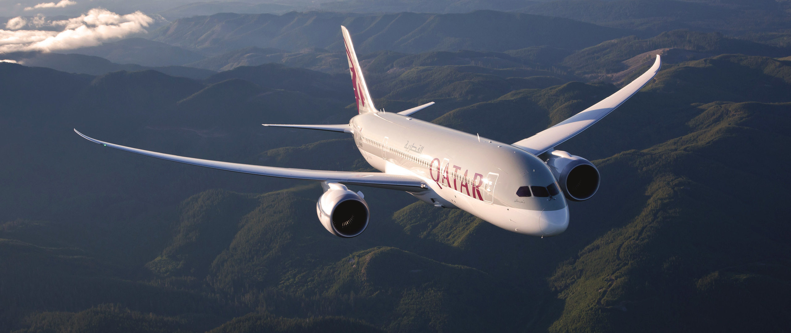

Boeing 787 Dreamliner
O "Heavyplastic" da Boeing

Principais características:
- Bimotor (GE GEnx ou RR Trent 1000) - Motores turbofan high by-pass super eficientes e silenciosos;
- Fuselagem em material compósito - Ao invés de alumínio o Dreamliner utiliza materiais como plástico e fibra de carbono, proporcionando uma maior resistência com um menor peso, além disso, essa composição de materiais permite que a pressurização da cabine seja maior, diminuindo o efeito de jet lag em viagens longas, e como um extra disso o ar ambiente do Dreamliner é mais úmido que os dos demais, proporcionando um ambiente mais agradável ao passageiro;
- Asas super eficientes - O Dreamliner possui uma das asas mais eficientes de toda a aviação, elas são extremamente flexíveis (o que reduz a sensação de turbulência), geram pouquíssimo arrasto aerodinâmico somadas ao seu raked wingtip (o que reduz o gasto de combustível) e geram muito mais sustentação (o que permite uma subida ao seu teto operacional muito mais rápido do que os demais aviões);
- Sistemas modernos - Além do sistema de controle fly-by-wire que permite um controle muito mais seguro e eficiente da aeronave, sua cabine também possui os aviônicos mais modernos presentes no mercado, diminuindo a carga de trabalho dos pilotos e garantindo um monitoramento do voo muito mais seguro;
Principais Concorrentes:
- Airbus A350-800
- Airbus A330 NEO
- Airbus A350-900
Versões do Dreamliner:
| |
Altura |
Envergadura |
Compimento |
Número de passageiros |
Alcance |
| 787-8 |
17 Metros |
60 Metros |
57 Metros |
248 |
13,530 km |
| 787-9 |
17 Metros |
60 Metros |
63 Metros |
296 |
13,950 km |
| 787-10 |
17 Metros |
60 Metros |
68 Metros |
336 |
11,750 km |